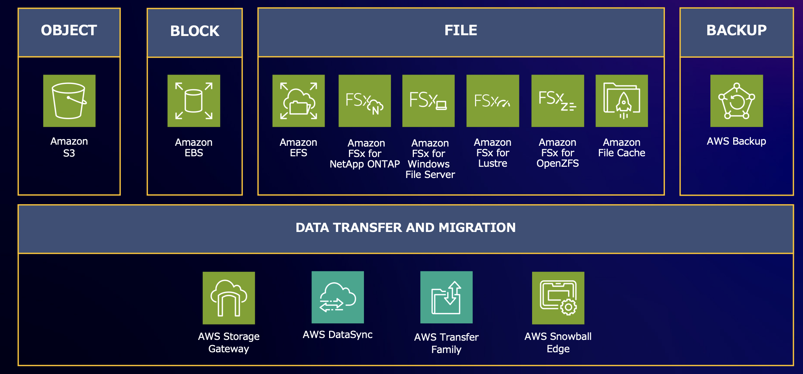

Storage全体像¶
AWSのストレージには役割ごとに適切なサービスが提供さている。  Amazon Elastic Block Store(Amazon EBS) 基礎編【AWS Black Belt】
ストレージの種別は、Block・File・Objectが代表的である。
 Amazon Elastic Block Store(Amazon EBS) 基礎編【AWS Black Belt】
Amazon Elastic Block Store(Amazon EBS) 基礎編【AWS Black Belt】
Blockストレージ¶
Blockタイプのストレージは、OSに対するストレージであり、低レイテンシーが要求されるワークロードに適している。